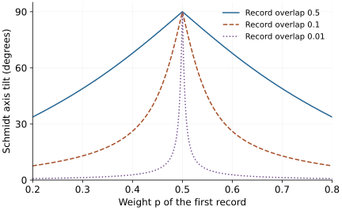

Research question
What does a state look like relative to an observer?
Call one part of an entangled pair the observer. Each of its basis states then picks out a state of the other part. How do these relative states change with the observer’s basis, and when does that give the Schmidt form?
A worked entry into an open research direction · Sources checked 30 October 2026
The question in perspective
Split a composite system in two and call one part the observer \(O\) and the other the observed system \(S\). If the whole is in a pure entangled state, \(S\) has no pure state of its own. So what can we say about \(S\)? Everett’s 1957 answer was to stop asking for the state of \(S\) and ask for its state relative to a given state of \(O\).
The Schmidt decomposition seems to complete this idea. It writes the whole as a list of pairs, each joining one observer state to one system state:
\[\ket\psi=\sum_i\sqrt{p_i}\,\ket{o_i}_O\ket{s_i}_S.\]
Each term pairs an observer state \(\ket{o_i}\) with the state \(\ket{s_i}\) that the system has relative to it. Does this mean the observer has seen outcome \(i\)? Not by itself. The mathematics gives us the relative states and how they are correlated. It does not say that one side is really an observer, that \(\ket{o_i}\) stores a measurement result, or that any outcome has occurred. Those claims need further assumptions. This page works out the mathematics first and then returns to them.
From relative states to the Schmidt form
Conditioning without collapse
Write a pure state in any product basis as \(\ket\psi=\sum_{ij}C_{ij}\ket i_O\ket j_S\). For a unit vector \(\ket\chi\) of the observer, the relative state of \(S\) and its weight are
\[\ket{\psi_\chi}=\frac{(\bra\chi\otimes I)\ket\psi}{\sqrt{p(\chi)}},\qquad p(\chi)=\big\|(\bra\chi\otimes I)\ket\psi\big\|^2.\]
Nothing has been removed from \(\ket\psi\). This is a conditional description, in the same sense that a conditional probability leaves the joint distribution in place. The global state remains pure and contains every term.
Choose any orthonormal basis \(\{\ket{\chi_k}\}\) of \(O\). The relative states then form an ensemble for the reduced state of \(S\):
\[\rho_S=\operatorname{tr}_O\ket\psi\bra\psi=\sum_k p(\chi_k)\ket{\psi_{\chi_k}}\bra{\psi_{\chi_k}}.\]
Different bases give different ensembles with the same average. Schrödinger called the ability to choose among them steering, and the Hughston–Jozsa–Wootters classification shows that every pure-state ensemble of \(\rho_S\) can be reached this way, using a generalised measurement of \(O\) where needed. So there is no single list of relative states. There is one for each way of asking.
Which basis gives orthogonal relative states?
Among all these ensembles, is any of them special? Let \(U\) be the unitary whose columns are the \(\ket{\chi_k}\), and let \(D=U^\dagger C\). The unnormalised relative states have amplitudes \(D_{kj}\), so their overlaps are
\[\big\langle\tilde\psi_{\chi_l}\big\vert\tilde\psi_{\chi_k}\big\rangle=\sum_j D_{lj}^*D_{kj}=\big(U^\dagger CC^\dagger U\big)_{kl}.\]
The matrix \(CC^\dagger\) is exactly \(\rho_O\) written in the basis \(\ket i\). The overlaps therefore vanish for all \(k\neq l\) if and only if \(U\) diagonalises \(\rho_O\). This is the content of the Schmidt decomposition, seen from the observer’s side:
\[\text{relative states are mutually orthogonal}\iff\{\ket{\chi_k}\}\text{ is an eigenbasis of }\rho_O.\]
The weights \(p_i\) are the eigenvalues, and the relative states \(\ket{s_i}\) form an eigenbasis of \(\rho_S\). In matrix language this is the singular value decomposition \(C=U\Sigma V^{\mathsf T}\) with \(\Sigma=\operatorname{diag}(\sqrt{p_i})\). The Schmidt form is not a new kind of state. It is the one relative-state description in which different observer states correspond to perfectly distinguishable system states. Ekert and Knight give an accessible account of the decomposition, which goes back to Schmidt’s work on integral equations.
See it: two arrows on one ellipse
For two qubits with real amplitudes, each relative state is an arrow in the plane of the observed qubit. Fix an observer basis \(\ket{o_0},\ket{o_1}\). The unnormalised relative states are the two arrows
\[\vec v_0=(\bra{o_0}\otimes I)\ket\psi,\qquad\vec v_1=(\bra{o_1}\otimes I)\ket\psi,\qquad|\vec v_0|^2+|\vec v_1|^2=1.\]
An arrow’s squared length is the weight of that observer state, and its direction is the relative state. They are simply the rows of \(C\). What happens when we rotate each side?
Rotating the observed qubit’s basis moves the axes and leaves the arrows where they are, so it changes their components only. It can never change the angle between them. Rotating the observer by \(\varphi\) is different, because it mixes the arrows:
\[\vec v_0(\varphi)=\cos\varphi\,\vec v_0+\sin\varphi\,\vec v_1,\qquad\vec v_1(\varphi)=-\sin\varphi\,\vec v_0+\cos\varphi\,\vec v_1=\vec v_0\big(\varphi+\tfrac\pi2\big).\]
The first equation is the parametric form of an ellipse. So as the observer turns, both arrows slide around one fixed ellipse, a quarter-turn of \(\varphi\) apart. Its shape depends only on \(\rho_S\), which is the no-signalling statement in pictorial form: the observer can move the arrows around the ellipse, but cannot change the ellipse.
Reaching the Schmidt form means choosing a basis on each side, and each choice is written as a rotation:
- Choose the observer basis \(U_O\) that makes the arrows perpendicular, which happens when they reach the ellipse’s principal axes: \[\tan2\varphi_\ast=\frac{2\,\vec v_0\cdot\vec v_1}{|\vec v_0|^2-|\vec v_1|^2}.\]
- Choose the observed basis \(U_S\) that lies along the arrows. The amplitude matrix \(C\) is then diagonal, and its entries are the semi-axes \(\sqrt{p_+}\) and \(\sqrt{p_-}\).
The ellipse’s shape measures the entanglement. Its semi-axes are the Schmidt coefficients, and the area of the parallelogram spanned by the arrows stays constant under both rotations. That area gives the concurrence:
\[\mathcal C=2\big|\vec v_0\times\vec v_1\big|=2\sqrt{p_+p_-},\qquad\text{ellipse area}=\pi\sqrt{p_+p_-}=\frac{\pi\mathcal C}2.\]
A product state gives a flat ellipse, a line segment, so the arrows are parallel in every observer basis and no rotation can separate them. A maximally entangled state gives a circle, so the arrows are perpendicular at every angle, which is why its Schmidt basis is not unique. Everything in between has exactly one pair of principal axes.
Nothing happens to the state. \(U_O\) and \(U_S\) are not operations carried out on the qubits. They only change the basis used to write the same vector \(\ket\psi\), so the coefficients become \(C'=U_OCU_S^{\mathsf T}\) while the state stays where it is. The arrows change with the observer’s basis because they answer a different question each time, not because anything has moved. The ellipse belongs to the state, and so it stays fixed.
Why the observer’s basis must be orthonormal. Every step above uses the completeness relation \(\sum_k\ket{o_k}\bra{o_k}=I\), which holds only for an orthonormal basis of the observer. It is what lets the arrows rebuild the state and share out its total weight:
\[\ket\psi=\sum_k\ket{o_k}\ket{v_k},\qquad\sum_k\braket{v_k}{v_k}=1,\qquad\rho_S=\sum_k\ket{v_k}\bra{v_k}.\]
Take two vectors that are not orthonormal and these equations fail: the arrows no longer rebuild \(\ket\psi\), their squared lengths are not probabilities that sum to one, and they do not average to \(\rho_S\). For this reason the figure has a single angle for the observer’s basis, so that \(\vec o_1\) is always perpendicular to \(\vec o_0\), and it recomputes both conditions from the drawn vectors as a check.
One frame for both qubits. The state is itself a linear map from observer vectors to observed vectors: \(\vec v=C^{\mathsf T}\vec o\). So we can draw both in one plane, identifying \(\ket0_O\) with \(\ket0_S\) and \(\ket1_O\) with \(\ket1_S\). The map then sends the observer’s unit circle onto the ellipse, and each basis vector \(\vec o_k\) to its arrow \(\vec v_k\). The Schmidt decomposition is the singular value decomposition of this map: the observer’s Schmidt vectors are the two perpendicular directions that stay perpendicular after mapping. The identification is a drawing convention, so comparing \(\vec o_k\) with \(\vec v_k\) directly has no physical meaning, while the angle between \(\vec v_0\) and \(\vec v_1\) does.
The separable check. Suppose \(\ket\psi=\ket a\ket b\). For every observer vector,
\[(\bra{o}\otimes I)\ket a\ket b=\braket oa\,\ket b,\]
so the observed vector is always a multiple of \(\ket b\), whichever basis the observer uses. Only its length \(|\braket oa|\) and sign (a phase, in general) change. The one exception is an \(\ket o\) orthogonal to \(\ket a\), whose weight is zero, so it has no relative state. The converse also holds. If \(C\) has rank 2, it maps the circle onto a genuine ellipse, and the arrow passes through every direction as the observer turns. So there is no middle case: the relative state is either the same in all observer bases or takes every direction, and that holds for any weak entanglement too. Press Sweep every observer basis with each state to see this.
o₀ → v₀ and o₁ → v₁: a dot on the circle is an observer basis vector, and its dotted link leads to the observed arrow it picks out. The right-angle mark shows the two observer vectors are perpendicular. A dashed line through the origin is the relative state, which ignores the arrow’s length and sign. Grey lines are the observed axes.
| s₀ | s₁ | |
|---|---|---|
| o₀ | ||
| o₁ |
- Observer basis orthonormal?
- \(\vec o_0\cdot\vec o_0,\ \vec o_1\cdot\vec o_1,\ \vec o_0\cdot\vec o_1\)
- State unchanged?
- Angle between relative states
- Same, over all observer bases
- Weights of o₀ and o₁
- Schmidt weights
- Concurrence
For the figure’s starting state, \(|\vec v_0|^2=0.6\), \(|\vec v_1|^2=0.4\), with a \(60^\circ\) angle between the arrows. Then \(\varphi_\ast\approx33.9^\circ\), the Schmidt weights are about \(0.765\) and \(0.235\), and \(\mathcal C\approx0.849\). This picture uses real amplitudes. A general state has complex amplitudes, but local unitaries can always bring it to its real Schmidt form, so the picture misses only local phases, not any of the entanglement. It is also not the Bloch-sphere steering ellipsoid, a related object that lives in the Bloch ball and also covers mixed states.
A worked pair of qubits
Take \(\ket\psi=\cos\theta\ket{00}+\sin\theta\ket{11}\) with \(0<\theta<\pi/4\). Conditioning on \(\ket0\) or \(\ket1\) of \(O\) gives the Schmidt pairs, with weights \(\cos^2\theta\) and \(\sin^2\theta\). Conditioning on \(\ket\pm=(\ket0\pm\ket1)/\sqrt2\) instead gives
\[\ket{\psi_\pm}=\cos\theta\ket0\pm\sin\theta\ket1,\qquad p(\pm)=\tfrac12,\qquad\braket{\psi_-}{\psi_+}=\cos2\theta.\]
These relative states are legitimate, but they overlap, so the observer’s two labels are not fully reflected in \(S\). Both ensembles average to the same \(\rho_S=\operatorname{diag}(\cos^2\theta,\sin^2\theta)\). That equality is why the observer’s choice of basis sends no signal to \(S\).
Equal weights: the Schmidt form stops selecting
Now set \(\theta=\pi/4\), the Bell state. Then \(\rho_O=I/2\), every basis diagonalises it, and every basis of \(O\) yields orthogonal relative states. The same state can be written as
\[\frac{\ket{00}+\ket{11}}{\sqrt2}=\frac{\ket{++}+\ket{--}}{\sqrt2}.\]
So the Schmidt form cannot say whether \(O\) has recorded the \(Z\) or the \(X\) value of \(S\). In general, the Schmidt bases are unique only when the nonzero \(p_i\) are all different. A basis is free to rotate within each block of equal weights.
Measurement, and records that are not quite orthogonal
Von Neumann’s model of a measurement entangles a ready observer with the system:
\[\ket{\text{ready}}\big(\sqrt p\ket0+\sqrt q\ket1\big)\mapsto\sqrt p\ket{r_0}\ket0+\sqrt q\ket{r_1}\ket1,\qquad q=1-p.\]
If the two records are orthogonal, this is already a Schmidt form and it names the observable that was measured. Real records need not be orthogonal. Let their overlap be \(\braket{r_0}{r_1}=\varepsilon\in[0,1)\). Then
\[\rho_S=\begin{pmatrix}p&\sqrt{pq}\,\varepsilon\\ \sqrt{pq}\,\varepsilon&q\end{pmatrix},\qquad p_\pm=\frac{1\pm\sqrt{1-4pq(1-\varepsilon^2)}}2,\qquad\tan\alpha=\frac{2\sqrt{pq}\,\varepsilon}{p-q},\]
where \(\alpha\) is the Bloch-sphere angle between the Schmidt axis of \(S\) and the \(Z\) axis the device was built to record. For \(p=0.8\) and \(\varepsilon=0.1\), the tilt is small: \(\alpha\approx7.6^\circ\), and the larger weight moves from \(0.800\) to \(0.803\). But for \(p=q\) and any \(\varepsilon>0\), however tiny, \(\alpha=90^\circ\). The Schmidt basis of \(S\) is then \(\ket\pm\), the observable the device was not recording.

This example carries the main warning of the page. The Schmidt basis is a fact about the correlations at one moment. What a device recorded is a fact about its construction and dynamics. They usually agree, and they can come apart abruptly near equal weights.
How much does the observer hold?
Because the global state is pure, both reduced states have the same nonzero spectrum, and their common entropy \(H(p)=-\sum_ip_i\log_2p_i\) is the entanglement entropy. Compare this with the same correlations after an environment has made them classical, leaving \(\rho_{OS}=\sum_ip_i\ket{o_is_i}\bra{o_is_i}\):
\[\begin{aligned}\text{pure }\ket\psi:\quad&S(S|O)=-H(p),&I(O:S)&=2H(p),\\ \text{after decoherence}:\quad&S(S|O)=0,&I(O:S)&=H(p).\end{aligned}\]
For weights \(0.8\) and \(0.2\), \(H\approx0.722\) bits, so the mutual information falls from about \(1.444\) to \(0.722\) bits. The negative conditional entropy has no classical counterpart. Cerf and Adami tie it to entanglement, and Horodecki, Oppenheim and Winter give it an operational meaning: when it is negative, merging the state onto one side costs no quantum communication and leaves entanglement to spare. In this sense the observer in a pure entangled state holds more than a classical record could. The extra is exactly what decoherence removes.
The Schmidt rank also limits memory: it is at most \(\min(\dim O,\dim S)\), so an observer with \(d\) memory states can hold at most \(d\) perfectly correlated records.
Adding a third system fixes the basis
Why does a third system help? A tripartite pure state does not generally have a form with three orthonormal sets, but when it does, Elby and Bub show that form is unique, even with equal weights. For example, \((\ket{000}+\ket{111})/\sqrt2\) has only the \(Z\)-basis triple. Unlike the Bell state, it cannot be rewritten as \(\ket{+++}\) and \(\ket{---}\) terms. So a record copied into an environment picks out what was recorded, where the bipartite form alone could not.
The cut is part of the description
The whole calculation depends on which factors are called \(O\) and \(S\). Apply a CNOT to the Bell state:
\[\text{CNOT}\,\frac{\ket{00}+\ket{11}}{\sqrt2}=\ket+\ket0.\]
Read another way, the same vector has Schmidt rank 2 with respect to one tensor-product structure and rank 1 with respect to another, defined by the conjugated observables. Zanardi and Zanardi, Lidar and Lloyd argue that accessible observables and interactions are what select the partition. So “who is correlated with whom” is relative to more than the observer’s state: it is also relative to the cut. The bipartite entanglement map follows this idea further.
What is established
These statements are theorems about any bipartite pure state, whatever interpretation is adopted:
- Relative states exist for every observer vector and average to \(\rho_S\) in every observer basis.
- The orthogonal relative-state descriptions are exactly the eigenbases of \(\rho_O\), and they are unique when the nonzero weights are distinct.
- The two reduced states share their nonzero spectrum, so the decomposition itself does not mark either side as the observer.
- Every pure-state ensemble of \(\rho_S\) can be steered from \(O\), and no choice of basis changes \(\rho_S\).
Decoherence adds a dynamical result. Zurek’s pointer basis is selected by the interaction between apparatus and environment, not by the momentary Schmidt form, and einselected states are those that stay stable and keep their correlations. This explains how a preferred record can arise, and quantum Darwinism adds that the environment can hold many copies. As Schlosshauer’s analysis emphasises, it does not by itself select one outcome: \(\rho_S\) looks like a classical mixture, but it is an improper one, since the global state still contains all terms. The page on why a measurement has one outcome develops that distinction.
Where interpretations differ is in what they add to the same formula:
- Everett’s relative states. The global state is real and complete, and observers appear within its terms. Wallace treats branches as emergent patterns, identified through dynamics and not written into the formalism, which avoids reading them directly from a Schmidt form. The Everett chapter of the interpretations course covers this in more depth.
- Modal interpretations. These take the Schmidt form most literally: in the Kochen–Dieks version, it fixes which properties are definite. The Stanford Encyclopedia’s survey reports the difficulties this meets, including degenerate weights, near-degenerate states and imperfect measurements, which is the behaviour in the figure above.
- Relational quantum mechanics. Rovelli rejects observer-independent states altogether. The word “relative” therefore means something different: Everett’s relative state is a conditional inside one global state, whereas Rovelli’s state is a relation with no global state behind it.
What remains unresolved
What makes one side an observer? The Schmidt form is symmetric, so any asymmetry must come from something else: memory stability, irreversibility or redundancy of records. There is no agreed minimal physical definition of an observer inside the formalism.
What selects the cut? Access to observables is one proposed answer, but it refers to what some agent can do, which brings the observer back into the definition. Whether the factorisation can be derived from the dynamics alone is still under discussion.
Where do the weights get their meaning? Zurek’s envariance argument derives Born’s rule for outcomes associated with Schmidt states, using symmetries of entanglement. Schlosshauer and Fine identify assumptions that enter such a derivation. The status of this kind of argument remains debated.
Can observed events be absolute? If an observer is itself a quantum system, its records can sit inside a larger superposition. Frauchiger and Renner build a thought experiment in which agents who apply quantum theory to each other reach conflicting conclusions, and that analysis is itself disputed. Bong et al. prove a sharper no-go theorem: if quantum evolution is controllable on the scale of an observer, then No-Superdeterminism, Locality or Absoluteness of Observed Events must fail. Their theorem constrains the options but does not choose among them, and nothing close to observer-scale control exists.
A concrete next investigation
Reproduce: for a random \(4\times4\) coefficient matrix \(C\), compute the singular value decomposition, condition on each left singular vector, and confirm that the relative states are orthogonal with weights equal to the squared singular values. Repeat in a random basis and confirm that the overlaps no longer vanish while \(\rho_S\) is unchanged.
Check: verify \(p_\pm\) and \(\tan\alpha\) for imperfect records, including \(\alpha\approx7.6^\circ\) at \(p=0.8,\varepsilon=0.1\) and \(\alpha=90^\circ\) at \(p=\tfrac12\) for small \(\varepsilon\). Then verify the two entropy rows for weights \(0.8\) and \(0.2\). These are learning results and contain nothing new.
Extend: couple the imperfect record to a few environment qubits through a specified interaction, then track two axes over time: the Schmidt axis of \(S\) across the \(S|OE\) cut, and the pointer axis selected by that interaction. A useful result would be a stated bound on how long and how far they disagree near equal weights. That would quantify, for a defined model, when reading records from a Schmidt form is safe. It would not settle any interpretive question.
Selected references
- Negative entropy and information in quantum mechanics
N. J. Cerf, C. Adami. 1995. Theory
Relates negative conditional entropy to entanglement.
- Quantum information can be negative
Michał Horodecki, Jonathan Oppenheim, Andreas Winter. 2005. Theory
Gives conditional entropy an operational meaning as partial quantum information.
- Virtual quantum subsystems
Paolo Zanardi. 2001. Theory
Argues that accessible observables select the partition into subsystems.
- Quantum tensor product structures are observable-induced
Paolo Zanardi, Daniel Lidar, Seth Lloyd. 2003. Theory
Develops an algebraic framework in which the tensor product structure is relative to observables.
- Decoherence, einselection, and the quantum origins of the classical
Wojciech H. Zurek. 2001. Review
Reviews how interaction with an environment selects stable pointer states.
- Quantum Darwinism
Wojciech H. Zurek. 2009. Research paper
Redundant environmental records and the emergence of classical accessibility.
- Everett and structure
David Wallace. 2001. Theory
Treats the macroworld in the Everett interpretation as emergent structures and patterns.
- Relational quantum mechanics
Carlo Rovelli. 1996. Theory
Rejects the notion of an observer-independent state.
- Probabilities from entanglement, Born's rule from envariance
W. H. Zurek. 2004. Theory
Derives Born's rule for outcomes associated with Schmidt states from environment-assisted invariance.
- On Zurek's derivation of the Born rule
Maximilian Schlosshauer, Arthur Fine. 2003. Theory
Identifies assumptions entering the envariance derivation.
- Quantum theory cannot consistently describe the use of itself
Daniela Frauchiger, Renato Renner. 2016. Theory
Proposes a thought experiment with agents who apply quantum theory to each other.
- A strong no-go theorem on the Wigner's friend paradox
Kok-Wei Bong et al.. 2019. Theory and experiment
Proves that observer-scale quantum control conflicts with one of three assumptions, including absoluteness of observed events.
- "Relative state" formulation of quantum mechanics
Hugh Everett III. 1957. Theory
Introduces the state of a subsystem relative to a state of the remainder.
- Zur Theorie der linearen und nichtlinearen Integralgleichungen
Erhard Schmidt. 1907. Theory
The mathematical origin of the decomposition now named after Schmidt.
- Entangled quantum systems and the Schmidt decomposition
Artur Ekert, Peter L. Knight. 1995. Theory
A pedagogical account of the Schmidt decomposition for entangled systems.
- Discussion of probability relations between separated systems
Erwin Schrödinger. 1935. Theory
Introduces steering of one system through measurements on another.
- A complete classification of quantum ensembles having a given density matrix
Lane P. Hughston, Richard Jozsa, William K. Wootters. 1993. Theory
Classifies the pure-state ensembles of a density matrix.
- Triorthogonal uniqueness theorem and its relevance to the interpretation of quantum mechanics
Andrew Elby, Jeffrey Bub. 1994. Theory
Shows that a three-way orthogonal decomposition is unique when it exists.
- Pointer basis of quantum apparatus: into what mixture does the wave packet collapse?
Wojciech H. Zurek. 1981. Theory
Ties the apparatus's preferred basis to its interaction with the environment.
- Modal interpretations of quantum mechanics
Olimpia Lombardi, Dennis Dieks. 2012. Review
Surveys modal interpretations, including the role of the biorthogonal decomposition and its difficulties.
- Decoherence, the measurement problem, and interpretations of quantum mechanics
Maximilian Schlosshauer. 2003. Review
Clarifies the relationship between environmental decoherence and questions about measurement and interpretation.
- Quantum steering ellipsoids
Sania Jevtic, Matthew F. Pusey, David Jennings, Terry Rudolph. 2013. Theory
Represents a two-qubit state by the set of Bloch vectors one party can steer the other to.
Years refer to first arXiv submission. Publication details are available in the linked records.